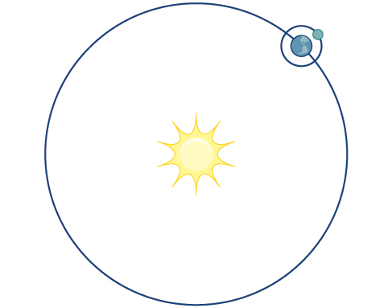
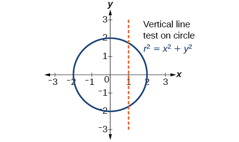
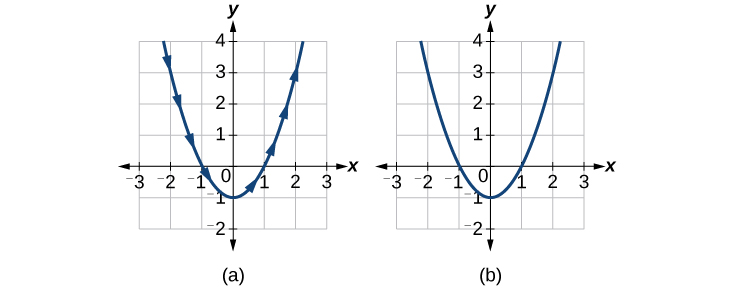
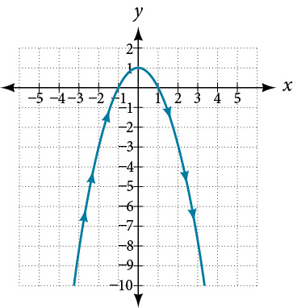
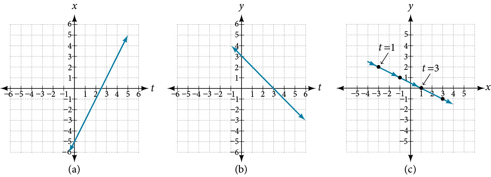
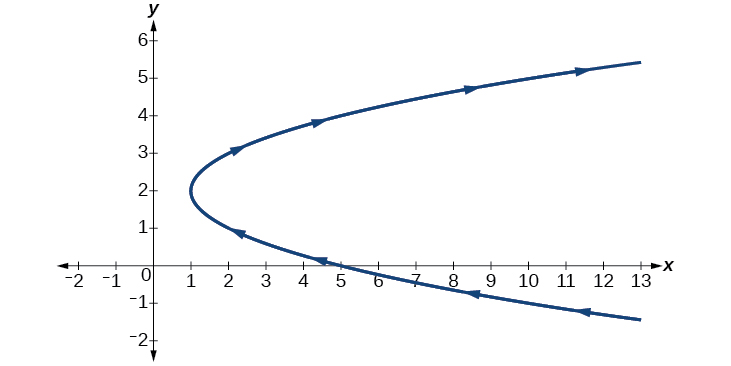
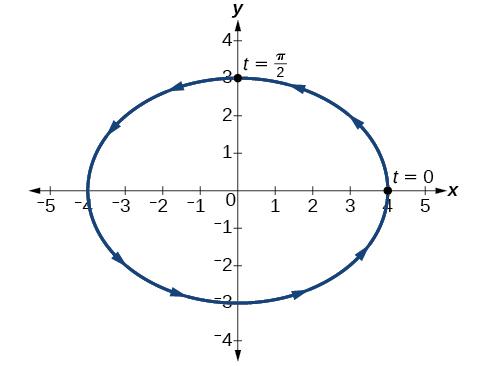
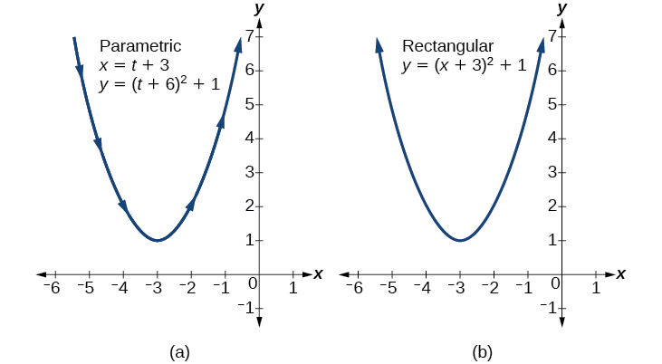

Parametric Equations
Consider the path a moon follows as it orbits a planet, which simultaneously rotates around the sun, as seen in Figure 1. At any moment, the moon is located at a particular spot relative to the planet. But how do we write and solve the equation for the position of the moon when the distance from the planet, the speed of the moon’s orbit around the planet, and the speed of rotation around the sun are all unknowns? We can solve only for one variable at a time.

In this section, we will consider sets of equations given by and where is the independent variable of time. We can use these parametric equations in a number of applications when we are looking for not only a particular position but also the direction of the movement. As we trace out successive values of the orientation of the curve becomes clear. This is one of the primary advantages of using parametric equations: we are able to trace the movement of an object along a path according to time. We begin this section with a look at the basic components of parametric equations and what it means to parameterize a curve. Then we will learn how to eliminate the parameter, translate the equations of a curve defined parametrically into rectangular equations, and find the parametric equations for curves defined by rectangular equations.
Parameterizing a Curve
When an object moves along a curve—or curvilinear path—in a given direction and in a given amount of time, the position of the object in the plane is given by the x-coordinate and the y-coordinate. However, both and vary over time and so are functions of time. For this reason, we add another variable, the parameter, upon which both and are dependent functions. In the example in the section opener, the parameter is time, The position of the moon at time, is represented as the function and the position of the moon at time, is represented as the function Together, and are called parametric equations, and generate an ordered pair Parametric equations primarily describe motion and direction.
When we parameterize a curve, we are translating a single equation in two variables, such as and into an equivalent pair of equations in three variables, and One of the reasons we parameterize a curve is because the parametric equations yield more information: specifically, the direction of the object’s motion over time.
When we graph parametric equations, we can observe the individual behaviors of and of There are a number of shapes that cannot be represented in the form meaning that they are not functions. For example, consider the graph of a circle, given as Solving for gives or two equations: and If we graph and together, the graph will not pass the vertical line test, as shown in Figure 2. Thus, the equation for the graph of a circle is not a function.

However, if we were to graph each equation on its own, each one would pass the vertical line test and therefore would represent a function. In some instances, the concept of breaking up the equation for a circle into two functions is similar to the concept of creating parametric equations, as we use two functions to produce a non-function. This will become clearer as we move forward.
Parameterizing a Curve
Parameterize the curve letting Graph both equations.
Solution
If then to find we replace the variable with the expression given in In other words, Make a table of values similar to Table 1, and sketch the graph.
See the graphs in Figure 3. It may be helpful to use the TRACE feature of a graphing calculator to see how the points are generated as increases.

Finding a Pair of Parametric Equations
Find a pair of parametric equations that models the graph of using the parameter Plot some points and sketch the graph.
Solution
If and we substitute for into the equation, then Our pair of parametric equations is
To graph the equations, first we construct a table of values like that in Table 2. We can choose values around from to The values in the column will be the same as those in the column because Calculate values for the column
The graph of is a parabola facing downward, as shown in Figure 4. We have mapped the curve over the interval shown as a solid line with arrows indicating the orientation of the curve according to Orientation refers to the path traced along the curve in terms of increasing values of As this parabola is symmetric with respect to the line the values of are reflected across the y-axis.

Finding Parametric Equations That Model Given Criteria
An object travels at a steady rate along a straight path to in the same plane in four seconds. The coordinates are measured in meters. Find parametric equations for the position of the object.
Solution
The parametric equations are simple linear expressions, but we need to view this problem in a step-by-step fashion. The x-value of the object starts at meters and goes to 3 meters. This means the distance x has changed by 8 meters in 4 seconds, which is a rate of or We can write the x-coordinate as a linear function with respect to time as In the linear function template and
Similarly, the y-value of the object starts at 3 and goes to which is a change in the distance y of −4 meters in 4 seconds, which is a rate of or We can also write the y-coordinate as the linear function Together, these are the parametric equations for the position of the object, where and are expressed in meters and represents time:
Using these equations, we can build a table of values for and (see Table 3). In this example, we limited values of to non-negative numbers. In general, any value of can be used.
From this table, we can create three graphs, as shown in Figure 5.

Analysis
Again, we see that, in Figure 5(c), when the parameter represents time, we can indicate the movement of the object along the path with arrows.
Eliminating the Parameter
In many cases, we may have a pair of parametric equations but find that it is simpler to draw a curve if the equation involves only two variables, such as and Eliminating the parameter is a method that may make graphing some curves easier. However, if we are concerned with the mapping of the equation according to time, then it will be necessary to indicate the orientation of the curve as well. There are various methods for eliminating the parameter from a set of parametric equations; not every method works for every type of equation. Here we will review the methods for the most common types of equations.
Eliminating the Parameter from Polynomial, Exponential, and Logarithmic Equations
For polynomial, exponential, or logarithmic equations expressed as two parametric equations, we choose the equation that is most easily manipulated and solve for We substitute the resulting expression for into the second equation. This gives one equation in and
Eliminating the Parameter in Polynomials
Given and eliminate the parameter, and write the parametric equations as a Cartesian equation.
Solution
We will begin with the equation for because the linear equation is easier to solve for
Next, substitute for in
The Cartesian form is
Analysis
This is an equation for a parabola in which, in rectangular terms, is dependent on From the curve’s vertex at the graph sweeps out to the right. See Figure 6. In this section, we consider sets of equations given by the functions and where is the independent variable of time. Notice, both and are functions of time; so in general is not a function of

Eliminating the Parameter in Exponential Equations
Eliminate the parameter and write as a Cartesian equation: and
Solution
Isolate
Substitute the expression into
The Cartesian form is
Eliminating the Parameter in Logarithmic Equations
Eliminate the parameter and write as a Cartesian equation: and
Solution
Solve the first equation for
Then, substitute the expression for into the equation.
The Cartesian form is
Analysis
To be sure that the parametric equations are equivalent to the Cartesian equation, check the domains. The parametric equations restrict the domain on to we restrict the domain on to The domain for the parametric equation is restricted to we limit the domain on to
Eliminating the Parameter from Trigonometric Equations
Eliminating the parameter from trigonometric equations is a straightforward substitution. We can use a few of the familiar trigonometric identities and the Pythagorean Theorem.
First, we use the identities:
Solving for and we have
Then, use the Pythagorean Theorem:
Substituting gives
Eliminating the Parameter from a Pair of Trigonometric Parametric Equations
Eliminate the parameter from the given pair of trigonometric equations where and sketch the graph.
Solution
Solving for and we have
Next, use the Pythagorean identity and make the substitutions.
The graph for the equation is shown in Figure 8.

Analysis
Applying the general equations for conic sections (introduced in Analytic Geometry, we can identify as an ellipse centered at Notice that when the coordinates are and when the coordinates are This shows the orientation of the curve with increasing values of
Finding Cartesian Equations from Curves Defined Parametrically
When we are given a set of parametric equations and need to find an equivalent Cartesian equation, we are essentially “eliminating the parameter.” However, there are various methods we can use to rewrite a set of parametric equations as a Cartesian equation. The simplest method is to set one equation equal to the parameter, such as In this case, can be any expression. For example, consider the following pair of equations.
Rewriting this set of parametric equations is a matter of substituting for Thus, the Cartesian equation is
Finding a Cartesian Equation Using Alternate Methods
Use two different methods to find the Cartesian equation equivalent to the given set of parametric equations.
Solution
Method 1. First, let’s solve the equation for Then we can substitute the result into the equation.
Now substitute the expression for into the equation.
Method 2. Solve the equation for and substitute this expression in the equation.
Make the substitution and then solve for
Finding Parametric Equations for Curves Defined by Rectangular Equations
Although we have just shown that there is only one way to interpret a set of parametric equations as a rectangular equation, there are multiple ways to interpret a rectangular equation as a set of parametric equations. Any strategy we may use to find the parametric equations is valid if it produces equivalency. In other words, if we choose an expression to represent and then substitute it into the equation, and it produces the same graph over the same domain as the rectangular equation, then the set of parametric equations is valid. If the domain becomes restricted in the set of parametric equations, and the function does not allow the same values for as the domain of the rectangular equation, then the graphs will be different.
Finding a Set of Parametric Equations for Curves Defined by Rectangular Equations
Find a set of equivalent parametric equations for
Solution
An obvious choice would be to let Then But let’s try something more interesting. What if we let Then we have
The set of parametric equations is
See Figure 9.

Key Concepts
- Parameterizing a curve involves translating a rectangular equation in two variables, and into two equations in three variables, x, y, and t. Often, more information is obtained from a set of parametric equations. See Example 1, Example 2, and Example 3.
- Sometimes equations are simpler to graph when written in rectangular form. By eliminating an equation in and is the result.
- To eliminate solve one of the equations for and substitute the expression into the second equation. See Example 4, Example 5, Example 6, and Example 7.
- Finding the rectangular equation for a curve defined parametrically is basically the same as eliminating the parameter. Solve for in one of the equations, and substitute the expression into the second equation. See Example 8.
- There are an infinite number of ways to choose a set of parametric equations for a curve defined as a rectangular equation.
- Find an expression for such that the domain of the set of parametric equations remains the same as the original rectangular equation. See Example 9.
Section Exercises
Verbal
What is a system of parametric equations?
Solution
A pair of functions that is dependent on an external factor. The two functions are written in terms of the same parameter. For example, and
Some examples of a third parameter are time, length, speed, and scale. Explain when time is used as a parameter.
Explain how to eliminate a parameter given a set of parametric equations.
Solution
Choose one equation to solve for substitute into the other equation and simplify.
What is a benefit of writing a system of parametric equations as a Cartesian equation?
What is a benefit of using parametric equations?
Solution
Some equations cannot be written as functions, like a circle. However, when written as two parametric equations, separately the equations are functions.
Why are there many sets of parametric equations to represent on Cartesian function?
Algebraic
For the following exercises, eliminate the parameter to rewrite the parametric equation as a Cartesian equation.
Solution
Solution
Solution
or
Solution
Solution
Solution
Solution
Solution
Solution
Solution
For the following exercises, rewrite the parametric equation as a Cartesian equation by building an table.
Solution
Solution
For the following exercises, parameterize (write parametric equations for) each Cartesian equation by setting or by setting
Solution
Solution
For the following exercises, parameterize (write parametric equations for) each Cartesian equation by using and Identify the curve.
Solution
Ellipse
Solution
Circle
Parameterize the line from to so that the line is at at and at at
Parameterize the line from to so that the line is at at and at at
Solution
Parameterize the line from to so that the line is at at and at at
Parameterize the line from to so that the line is at at and at at
Solution
Technology
For the following exercises, use the table feature in the graphing calculator to determine whether the graphs intersect.
Solution
yes, at
For the following exercises, use a graphing calculator to complete the table of values for each set of parametric equations.
| –1 | ||
| 0 | ||
| 1 |
| 1 | ||
| 2 | ||
| 3 |
Solution
| 1 | -3 | 1 |
| 2 | 0 | 7 |
| 3 | 5 | 17 |
| -1 | ||
| 0 | ||
| 1 | ||
| 2 |
Extensions
Find two different sets of parametric equations for
Solution
answers may vary:
Find two different sets of parametric equations for
Find two different sets of parametric equations for
Solution
answers may vary: ,
Analysis
The arrows indicate the direction in which the curve is generated. Notice the curve is identical to the curve of